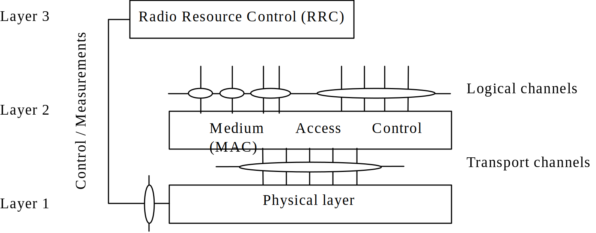
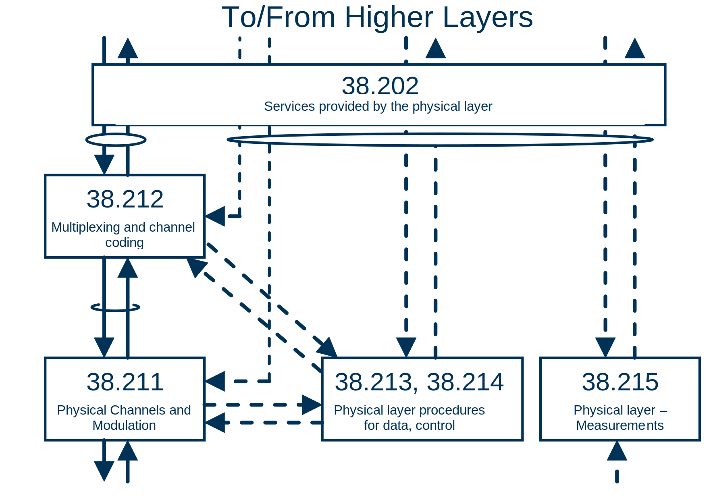

3GPP TS 38.201 V17.0.0 (2021-12)
Technical Specification
3rd Generation Partnership Project;
Technical Specification Group Radio Access Network;
NR;
Physical layer; General description
(Release 17)
The present document has been developed within the 3rd Generation
Partnership Project (3GPP TM) and may be further elaborated
for the purposes of 3GPP..
The present document has not been subject to any approval process by the
3GPP Organizational Partners and shall not be implemented.
This Specification is provided for future development work within 3GPP
only. The Organizational Partners accept no liability for any use of
this Specification.
Specifications and Reports for implementation of the 3GPP TM
system should be obtained via the 3GPP Organizational Partners'
Publications Offices.
Keywords
3GPP, New Radio, Layer 1
3GPP
Postal address
3GPP support office address
650 Route des Lucioles - Sophia Antipolis
Valbonne - FRANCE
Tel.: +33 4 92 94 42 00 Fax: +33 4 93 65 47 16
Internet
http://www.3gpp.org
Copyright Notification
No part may be reproduced except as authorized by written
permission.
The copyright and the foregoing restriction extend to reproduction in
all media.
© 2021, 3GPP Organizational Partners (ARIB, ATIS, CCSA, ETSI, TSDSI, TTA, TTC).
All rights reserved.
UMTS™ is a Trade Mark of ETSI registered for the benefit of its members
3GPP™ is a Trade Mark of ETSI registered for the benefit of its
Members and of the 3GPP Organizational Partners
LTE™ is a Trade Mark of ETSI registered for the benefit of its Members
and of the 3GPP Organizational Partners
GSM® and the GSM logo are registered and owned by the GSM Association
Foreword 4
1 Scope 5
2 References 5
3 Definitions, symbols and abbreviations 5
3.1 Definitions 5
3.2 Symbols 5
3.3 Abbreviations 5
4 General description of layer 1 6
4.1 Relation to other layers 6
4.1.1 General protocol architecture 6
4.1.2 Service provided to higher layers 7
4.2 General description of layer 1 7
4.2.1 Multiple access 7
4.2.2 Physical channels and modulation 7
4.2.3 Channel coding 8
4.2.4 Physical layer procedures 8
4.2.5 Physical layer measurements 8
5 Document structure of physical layer specification 8
5.1 Overview 8
5.2 TS 38.201: Physical layer; General description 9
5.3 TS 38.202: Physical layer services provided by the physical layer 9
5.4 TS 38.211: Physical channels and modulation 9
5.5 TS 38.212: Multiplexing and channel coding 10
5.6 TS 38.213: Physical layer procedures for control 10
5.7 TS 38.214: Physical layer procedures for data 10
5.8 TS 38.215: Physical layer measurements 10
5.9 TS 37.213: Physical layer procedures for shared spectrum channel access 10
Annex A (informative): Preferred mathematical notations 12
Annex B (informative): Change history 13
This Technical Specification has been produced by the 3rd Generation Partnership Project (3GPP).
The contents of the present document are subject to continuing work within the TSG and may change following formal TSG approval. Should the TSG modify the contents of the present document, it will be re-released by the TSG with an identifying change of release date and an increase in version number as follows:
Version x.y.z
where:
x the first digit:
1 presented to TSG for information;
2 presented to TSG for approval;
3 or greater indicates TSG approved document under change control.
y the second digit is incremented for all changes of substance, i.e. technical enhancements, corrections, updates, etc.
z the third digit is incremented when editorial only changes have been incorporated in the document.
The present document provides a general description of the physical layer of NR radio interface. The present document also describes the document structure of the 3GPP physical layer specifications, i.e. TS 38.200 series.
The following documents contain provisions which, through reference in this text, constitute provisions of the present document.
[1] 3GPP TR 21.905: "Vocabulary for 3GPP Specifications"
[2] 3GPP TS 38.202: "NR; Services provided by the physical layer"
[3] 3GPP TS 38.211: "NR; Physical channels and modulation"
[4] 3GPP TS 38.212: "NR; Multiplexing and channel coding"
[5] 3GPP TS 38.213: "NR; Physical layer procedures for control"
[6] 3GPP TS 38.214: "NR; Physical layer procedures for data"
[7] 3GPP TS 38.215: "NR; Physical layer measurements"
For the purposes of the present document, the terms and definitions given in TR 21.905 [1] and the following apply. A term defined in the present document takes precedence over the definition of the same term, if any, in TR 21.905 [1].
Definition format
<defined term>: <definition>.
example: text used to clarify abstract rules by applying them literally.
For the purposes of the present document, the following symbols apply:
Symbol format
<symbol> <Explanation>
For the purposes of the present document, the abbreviations given in TR 21.905 [1] and the following apply. An abbreviation defined in the present document takes precedence over the definition of the same abbreviation, if any, in TR 21.905 [1].
BPSK Binary Phase Shift Keying
CP Cyclic Prefix
DFT-s-OFDM Discrete Fourier Transform-spread-Orthogonal Frequency Division Multiplexing
DU Distributed Unit
E-UTRA Evolved Universal Terrestrial Radio Access
FDD Frequency Division Duplex
FEC Forward Error Correction
HARQ Hybrid Automatic Repeat Request
IAB Integrated access and backhaul
LDPC Low Density Parity Check
MAC Medium Access Control
MIMO Multiple Input Multiple Output
MT Mobile Termination
OFDM Orthogonal Frequency Division Multiplexing
PBCH Physical Broadcast Channel
PDCCH Physical Downlink Control Channel
PDSCH Physical Downlink Shared Channel
PRACH Physical Random Access Channel
PSBCH Physical Sidelink Broadcast Channel
PSCCH Physical Sidelink Control Channel
PSFCH Physical Sidelink Feedback Channel
PSSCH Physical Sidelink Shared Channel
PUCCH Physical Uplink Control Channel
PUSCH Physical Uplink Shared Channel
QAM Quadrature Amplitude Modulation
QPSK Quadrature Phase Shift Keying
RLC Radio Link Control
RRC Radio Resource Control
SAP Service Access Point
SRS Sounding reference signal
TDD Time Division Duplex
UE User Equipment
The radio interface described in this specification covers the interface between the User Equipment (UE) and gNB, between gNBs, between IAB-node DU and IAB-node MT/UE, and between UEs. The radio interface is composed of the Layer 1, 2 and 3. The TS 38.200 series describes the Layer 1 (Physical Layer) specifications. Layers 2 and 3 are described in the 38.300 series.

Figure 1: Radio interface protocol architecture around the physical layer
Figure 1 shows the NR radio interface protocol architecture around the physical layer (Layer 1). The physical layer interfaces the Medium Access Control (MAC) sub-layer of Layer 2 and the Radio Resource Control (RRC) Layer of Layer 3. The circles between different layer/sub-layers indicate Service Access Points (SAPs). The physical layer offers a transport channel to MAC. The transport channel is characterized by how the information is transferred over the radio interface. MAC offers different logical channels to the Radio Link Control (RLC) sub-layer of Layer 2. A logical channel is characterized by the type of information transferred.
The physical layer offers data transport services to higher layers. The access to these services is through the use of a transport channel via the MAC sub-layer. Details are specified in [2].
The multiple access scheme for the NR physical layer is based on Orthogonal Frequency Division Multiplexing (OFDM) with a cyclic prefix (CP). For uplink, Discrete Fourier Transform-spread-OFDM (DFT-s-OFDM) with a CP is also supported. To support transmission in paired and unpaired spectrum, both Frequency Division Duplex (FDD) and Time Division Duplex (TDD) are enabled.
The Layer 1 is defined in a bandwidth agnostic way based on resource blocks, allowing the NR Layer 1 to adapt to various spectrum allocations. A resource block spans 12 sub-carriers with a given sub-carrier spacing.
The radio frame has a duration of 10ms and consists of 10 sub-frames with a sub-frame duration of 1ms. A sub-frame is formed by one or multiple adjacent slots, each having 14 adjacent symbols. Further details on the frame structure are specified in [2].
The physical channels defined in the downlink are:
- the Physical Downlink Shared Channel (PDSCH),
- the Physical Downlink Control Channel (PDCCH),
- the Physical Broadcast Channel (PBCH),
The physical channels defined in the uplink are:
- the Physical Random Access Channel (PRACH),
- the Physical Uplink Shared Channel (PUSCH),
- and the Physical Uplink Control Channel (PUCCH).
The physical channels defined in the sidelink are:
- the Physical Sidelink Broadcast Channel (PSBCH),
- the Physical Sidelink Control Channel (PSCCH),
- the Physical Sidelink Feedback Channel (PSFCH),
- and the Physical Sidelink Shared Channel (PSSCH).
In addition, signals are defined as reference signals, primary and secondary synchronization signals.
The modulation schemes supported are
- in the downlink, QPSK, 16QAM, 64QAM, 256QAM, and 1024QAM,
- in the uplink, QPSK, 16QAM, 64QAM and 256QAM for OFDM with a CP and π/2-BPSK, QPSK, 16QAM, 64QAM and 256QAM for DFT-s-OFDM with a CP.
The channel coding scheme for transport blocks is quasi-cyclic LDPC codes with 2 base graphs and 8 sets of parity check matrices for each base graph, respectively. One base graph is used for code blocks larger than certain sizes or with initial transmission code rate higher than thresholds; otherwise, the other base graph is used. Before the LDPC coding, for large transport blocks, the transport block is segmented into multiple code blocks with equal size. The channel coding scheme for PBCH and control information is Polar coding based on nested sequences. Puncturing, shortening and repetition are used for rate matching. Further details of channel coding schemes are specified in [4].
There are several Physical layer procedures involved. Such procedures covered by the physical layer are;
- Cell search
- Power control
- Uplink synchronisation and Uplink timing control
- Random access related procedures
- HARQ related procedures
- Beam management and CSI related procedures
- Sidelink related procedures
- Channel access procedures
Through the control of physical layer resources in the frequency domain as well as in the time and power domains, implicit support of interference coordination is provided in NR.
Radio characteristics are measured by the UE and the network and reported to higher layers. These include, e.g. measurements for intra- and inter-frequency handover, inter RAT handover, timing measurements, and measurements for RRM.
Measurements for inter-RAT handover are defined in support of handover to E-UTRA.
The physical layer specification consists of a general document (TS 38.201), and seven documents (TS 38.202, 38.211 through 38.215, and 37.213). The relation between the physical layer specifications in the context of the higher layers is shown in Figure 2.

Figure 2: Relation between Physical Layer specifications
The scope is to describe:
- The contents of the Layer 1 documents (TS 38.200 series);
- Where to find information;
The scope is to describe services provided by the physical layer, and to specify:
- Services and functions of the physical layer;
- Model of physical layer of the UE;
- Parallel transmission of simultaneous physical channels and SRS;
- Measurements provided by the physical layer.
The scope is to establish the characteristics of the Layer-1 physical channels, generation of physical layer signals and modulation, and to specify:
- Definition of the uplink, downlink and sidelink physical channels;
- Frame structure and physical resources;
- Modulation mapping (BPSK, QPSK, etc);
- OFDM signal generation;
- Scrambling, modulation and upconversion;
- Layer mapping and precoding;
- Physical shared channel in uplink, downlink and sidelink;
- Reference signal in uplink, downlink and sidelink;
- Physical random access channel;
- Primary and secondary synchronization signals.
The scope is to describe the transport channel and control channel data processing, including multiplexing, channel coding and interleaving, and to specify:
- Channel coding schemes;
- Rate matching;
- Uplink transport channels and control information;
- Downlink transport channels and control information;
- Sidelink transport channels and control information.
The scope is to establish the characteristics of the physical layer procedures for control, and to specify:
- Synchronization procedures;
- Uplink power control;
- Random access procedure;
- UE procedure for reporting control information;
- UE procedure for receiving control information.
The scope is to establish the characteristics of the physical layer procedures for data, and to specify:
- Power control;
- Physical downlink shared channel related procedures;
- Physical uplink shared channel related procedure;
- Physical sidelink shared channel related procedure.
The scope is to establish the characteristics of the physical layer measurements, and to specify:
- Control of UE/NG-RAN measurements;
- Measurement capabilities for NR.
The scope is to establish the characteristics of the physical layer procedures for shared spectrum channel, and to specify:
- Downlink channel access procedures;
- Uplink channel access procedures.
Annex A (informative):
Preferred mathematical notations
The following table contains the preferred mathematical notations used in L1 documentation.
| item | notation |
| multiply product | cross sign, e.g. a×b |
| matrix product | dot sign, e.g. a⋅b |
| scalar product (product of a matrix by a scalar) | dot sign, scalar should precede matrix e.g. |
| matrix dimensioning | number of rows × number of column, e.g.: R×C |
| Kronecker product | a⊗b |
| bracketing of sets (all elements of same type, not ordered elements) | curly brackets {}, e.g. {a1, a2, …,ap}, or |
| bracketing of lists (all elements not necessary of same type, ordered elements) | round brackets (), e.g. (A, u, x) |
| bracketing of sequences (all elements of same type, ordered elements) | angle brackets, e.g. <a1, a2, …,ap> or |
| bracketing of function argument | round brackets, e.g. f(x) |
| bracketing of array index | square brackets, e.g. a[x] |
| bracketing of matrix or vector | square brackets [], e.g. , , or |
| Separation of indexes | use a comma : e.g. Ni,j |
| use of italic for symbols | a symbol should be either in italic or in normal font, but mixing up should be avoided. |
| bracketing of arithmetic expression to force precedence of operations | round brackets : e.g.  |
| necessity of bracketing arithmetic expressions | When only + and × bracketing is not necessary. When the mod operator is used explicit bracketing of mod operands and possibly result should be done. |
| number type | in a context of non negative integer numbers, some notes should stress when a number is signed, or possibly fractional. |
| binary xor and and | respectively use + or ⋅. If no "mod 2" is explicitly in the expression some text should stress that the operation is modulo 2. |
| matrix or vector transpose | vT |
| 1×1 matrices | implicitly cast to its unique element. |
| vector dot product | uT⋅v for column vectors, and u⋅vT for line vectors |
| complex conjugate | v* |
| matrix or vector Hermitian transpose | vH |
| real part and imaginary part of complex numbers. | Re(x) and Im(x) |
Modulo operation (including negative value) |
Let be the integer quotient of and , is integer, is remainder then
(Note that is floor operation to round the elements of to the nearest integers towards minus infinity) |
Annex B
(informative):
Change history
| Change history | |||||||
| Date | Meeting | TDoc | CR | Rev | Cat | Subject/Comment | New version |
| 2017-05 | RAN1#89 | R1-1708435 | Draft skeleton | 0.0.0 | |||
| 2017-07 | AH_1706 | R1-1712012 | Inclusion of agreements up to and including RAN1 NR Ad-Hoc #2 | 0.0.1 | |||
| 2017-08 | RAN1#90 | R1-1713894 | Updates according to email discussion " [NRAH2-03-201] TS 38.201" | 0.0.2 | |||
| 2017-08 | RAN1#90 | R1-1715069 | Clean version | 0.1.0 | |||
| 2017-08 | RAN1#90 | R1-1715319 | Inclusion of agreements up to and including RAN1 #90 | 0.1.1 | |||
| 2017-09 | RAN #77 | RP-171998 | For information to RAN | 1.0.0 | |||
| 2017-11 | RAN1#90b | R1-1719242 | Inclusion of agreements up to and including RAN1#90bis | 1.0.1 | |||
| 2017-11 | RAN1#91 | R1-1721046 | Endorsed version by RAN1#90bis (email thread) | 1.1.0 | |||
| 2017-12 | RAN1#91 | R1-1721339 | Editorial update - Endorsed version by RAN1#91 (email thread) | 1.2.0 | |||
| 2017-12 | RAN#78 | RP-172530 | Endorsed version for approval by plenary. | 2.0.0 | |||
| 2017-12 | RAN#78 | Approved by plenary – Rel-15 spec under change control | 15.0.0 | ||||
| 2019-12 | RAN#86 | RP-192661 | 0001 | - | B | Introduction of V2X, NR-based access to unlicensed spectrum, integrated access backhaul for NR and remote interference management | 16.0.0 |
| 2021-12 | RAN#94-e | RP-212982 | 0002 | - | B | Introduction of DL 1024QAM | 17.0.0 |
 , where
for all and
, where
for all and